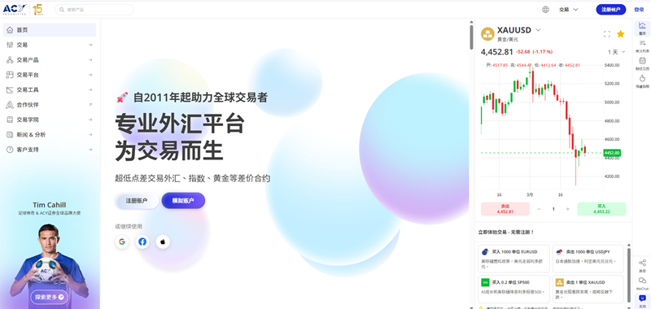
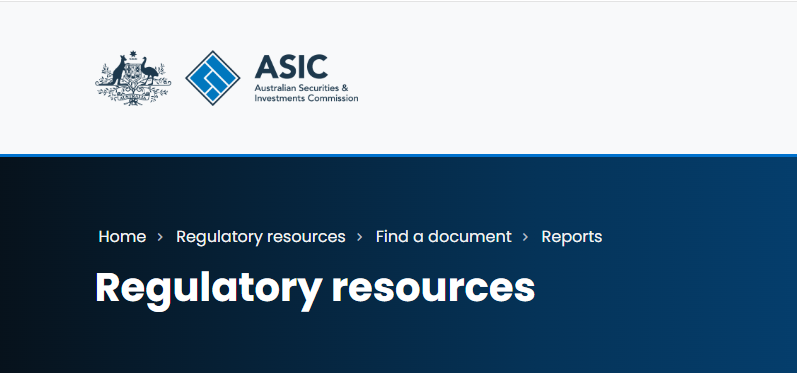
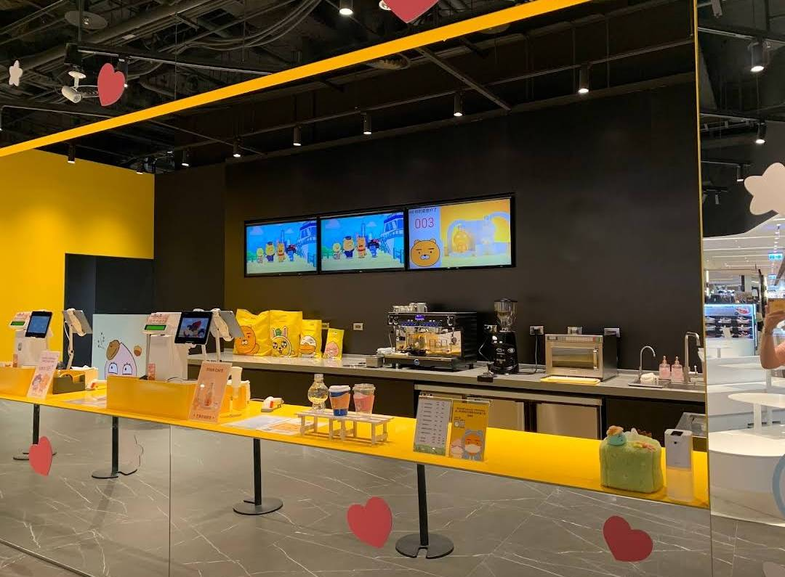
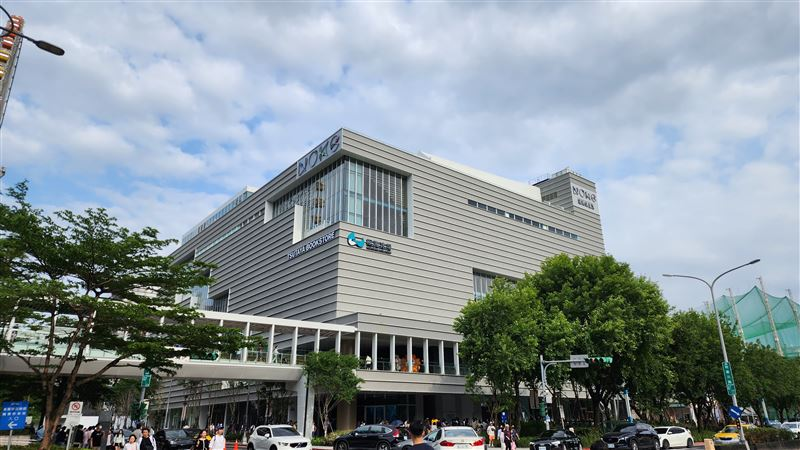
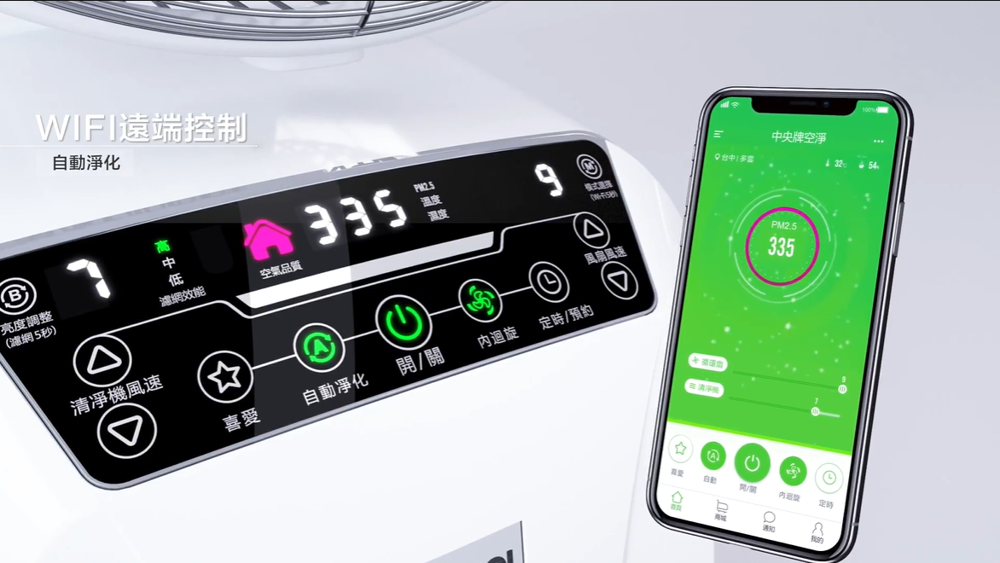
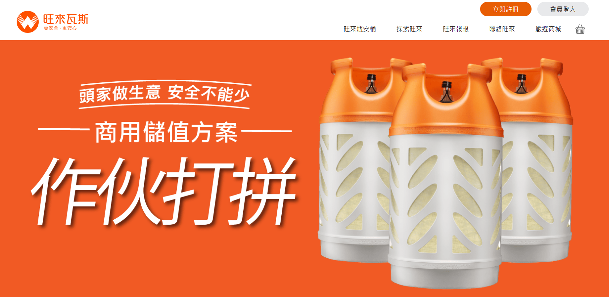
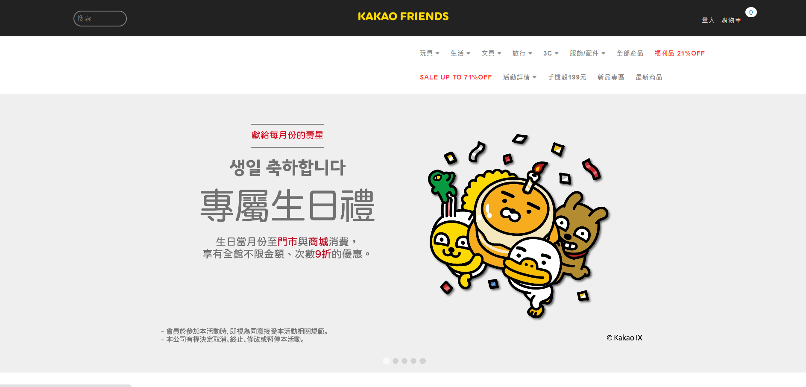

Finance
Focused on trading platforms, payment flows, KYC, CRM, and operational delivery.
Best for brokerage, fintech, payments, and regulated platform PM roles.
Learn more
I'm
Product Manager with 10 years across AI, trading systems, retail, and marketing.
I am currently an AI Chatbot Product Manager at Cathay Financial Holdings, in the Digital, Data and Technology Development Center. I own conversational AI and intelligent customer service product planning: user scenarios, intent architecture, dialogue flows, and the rollout of generative AI into regulated financial journeys.
Previously I managed trading-platform operations, payment workflows, KYC, CRM, and cross-functional delivery for an Australian CFD brokerage, connecting product priorities with engineering, operations, finance, compliance, support, and external partners.
Earlier experience includes POS and ecommerce implementation, OMO workflow design, SEO program management, and cross-border product execution in Taiwan, Shanghai, and Cambodia. I am strongest in roles that require structured problem framing, practical system integration, and measurable business outcomes.
I am strongest where product judgment, execution ownership, and cross-functional coordination are critical, especially at the intersection of AI products and regulated financial services.
across fintech, retail systems, growth, and overseas execution
managed across SEO, growth, and cross-regional delivery programs
coordinated across engineering, operations, finance, support, and vendors
spanning web, marketing, CRM, POS, and fintech
Choose the resume version that best matches your target industry.
A chronological timeline covering title, scope, period, location, and key outcomes.
Role: AI Chatbot Product Manager | Industry: Generative AI | Scope: Conversational AI | Company: Cathay Financial Holdings, Digital, Data and Technology Development Center
Industry: Australian CFD brokerage | Scope: MT4/MT5, in-house platform, payment flow, KYC, CRM | Company: Zerologix / ACY
Industry: B2B manufacturing / Growth systems | Scope: SEO across 20+ brands, content operations, CRM funnel
Industry: Retail technology | Scope: custom POS, membership, ecommerce, e-invoice, API integration
Role: Marketing Manager | Scope: group-buying ecommerce, O2O, corporate website, and conversion flow | Format: project-based / parallel delivery
Scope: local operations, investor coordination, store launch, hiring, customs workflow
Industry: IoT / Ecommerce channels | Scope: product launch, content assets, digital marketing
Cases from three industries - finance, retail, and growth marketing. Switch category to see the matching work.

Traffic grew 3x, payment throughput improved, and cross-team operational information became consistent.
Active copy traders reached an all-time high, well above the same period the previous year.

Filed reports in the formats regulators specify, resolving data errors and satisfying compliance requirements.
Used real trading and withdrawal flows to understand the industry ecosystem, tooling decisions, and platform experience.

Live within a month, integrating the website, POS, membership, and inventory flows.

Handled early technical integration and troubleshooting for a large mall running several business formats.

Revived a premium electric fan brand site and expanded its channels, supporting commercialization and online sales.

Built a POS system for gas retailers that did not exist on the market, with online ordering on top.
Ran product management across hardware and software, from planning through a successful launch.
Filed reports in the formats regulators specify, resolving data errors and satisfying compliance requirements.

Site builds and SEO across machine tools, food, retail, finance, and other industries.
Captured traffic across Taichung districts: users grew 60% and organic traffic rose 300%.
A PM can bring both the ideas and the execution.
A public-good side project built around AI and prayer audio content.
A multi-agent assistant for resumes and career positioning.
A prompt tool for trading strategy analysis and AI-assisted judgment.
Recruiter-facing PM keywords backed by actual delivery context.
Used in trading-platform planning, POS rollout sequencing, and product launch decisions.
Delivered across POS, CRM, ERP, payment, and e-invoice environments with live operational constraints.
Applied across 20+ SEO programs, finance-site acquisition work, and CRM-driven conversion tracking.
Coordinated 10-15 person delivery scopes across developers, operators, support, finance, and external partners.
Open to AI Product Manager, Conversational AI / Chatbot PM, FinTech PM, and System Integration PM conversations.